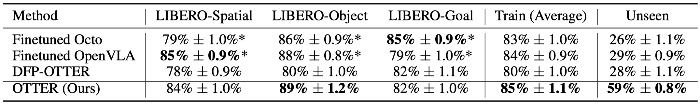
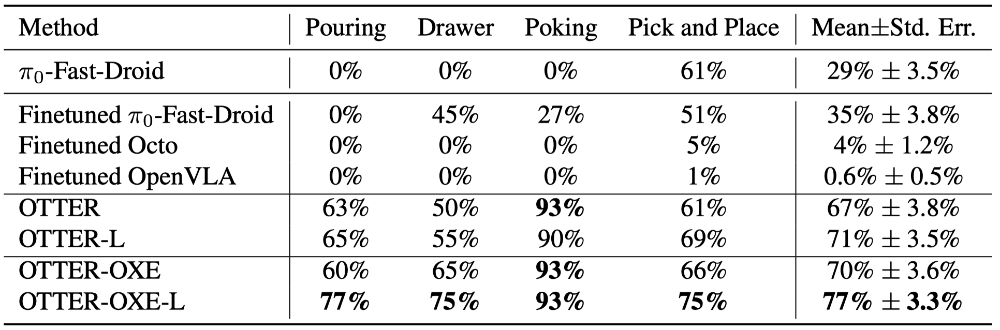

We introduce OTTER, a novel vision-language-action model that predicts robotic actions by extracting task-relevant visual features using a frozen, pre-trained CLIP encoder. By selectively extracting text-aware visual tokens aligned with language instructions, OTTER preserves the rich semantic understanding of the pre-trained model, leading to significantly improved zero-shot generalization on unseen robot manipulation tasks over existing state-of-the-art VLAs.
OTTER circumvents the need to fine-tune the pre-trained vision-language model, maintaining robust semantic alignment while combining visual, language, and proprioceptive features through a policy transformer. We demonstrate OTTER's effectiveness through extensive experiments in both simulation and real-world scenarios.
Simulation results on LIBERO We evaluate OTTER and other baselines on 300 trials on in-distribution tasks in LIBERO Spatial/Object/Goal, and 100 trials on unseen tasks we constructed. The numbers marked with ∗ of are directly referred from the OpenVLA paper. OTTER performs on par with existing VLAs on in-distribution tasks and significantly outperforms them on unseen objects and environment configurations. 
Real Robot Multi-primitive zero-shot generalization We train models across four manipulation primitives (pouring, drawer manipulation, poking, and pick-and-place) with a total of 1,185 human tele-operated demonstration trajectories and evaluate them on 150 trials of completely unseen tasks within these primitives. The results further suggest that OTTER’s generalization capabilities can be enhanced through increased model capacity (OTTER-L) and pre-training on large robotic datasets (OTTER-OXE).
